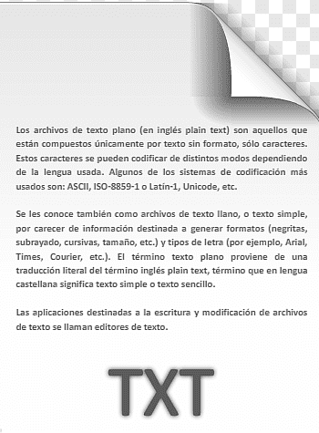

Design Proposal.docRethinking the Desktop for Ultra-Wide Displays
Executive Summary
Modern displays have grown dramatically wider over the past decade, yet the fundamental model of how we arrange and interact with windows has remained largely unchanged since the early 1990s. This proposal outlines a new spatial interaction paradigm designed specifically for ultra-wide monitors.
The core thesis is simple: on a 3440-pixel-wide display, the edges of the screen are genuinely far from the centre. Rather than fighting this geometry with ever-larger windows, we can embrace it — using the edges as a place to park work-in-progress at reduced scale, keeping the centre clear for active focus.
Bridging Clipboard and Filesystem
This phase explores a side panel attached to the editor that blurs the line between a clipboard and a folder. Content dragged out of the document — an image, a snippet, a table — becomes a real file in the project, instantly previewable without leaving the writing surface.
- Drag a selection into the panel → it persists as a named file.
- Hover any file → an inline card previews it in place.
- Click a file → it opens as a tab beside the document, never replacing it.
Design Principles
Three principles guide the interaction model. First, continuity: content should never disappear when you stop looking at it. Minimising a window today is a one-way door — the work is gone from view and retrieving it requires a deliberate act. The panel model keeps everything reachable without modal disruption.
Second, proximity: related artefacts should live physically close to the document that generated them. A moodboard referenced in paragraph three should not require a trip to the filesystem — it should be one hover away, anchored to the text that cares about it.
Third, legibility: the panel should communicate the type and provenance of each item at a glance. A dragged image, a pasted snippet, and a linked spreadsheet are visually distinct even at small size, so the cognitive cost of recognising them is near zero.
Open Questions
Several design decisions remain unresolved and will require user testing to settle. Should the panel persist across documents, or be scoped to a single file? Should items expire after a configurable period, or remain indefinitely? And critically — should the panel be write-only (clipboard-to-file) or bidirectional (edits in the panel reflect back into the document)?
The bidirectional case is the most compelling and the most dangerous. Live sync between a panel item and its in-document reference could eliminate an entire class of copy-paste errors. It also introduces the risk of silent, hard-to-undo mutations. A versioned history view — visible in the panel itself — may be the right safety net.
Next Steps
User testing across representative authoring tasks, then extending the panel to accept drops from other applications on the desktop. A follow-on prototype will explore the bidirectional sync case with explicit version markers so participants can reason about change history without leaving the document.
Research Notes
Users spend a disproportionate share of their time managing windows rather than doing the work the windows contain. Three inherited assumptions drive the friction:
- Windows are either open or minimised — no intermediate state.
- Everything competes on one flat plane, ordered only by z-index.
- Spatial organisation is entirely manual.
Observed behaviours
In ultrawide sessions, participants naturally pushed reference material toward the screen edges and kept the centre clear — anticipating the parking model before it was explained.
"I just want this over here while I look at that." — P4
Open question
Is 50% the right parked scale, or should it adapt to content type?
| A | B | C | |
|---|---|---|---|
| 1 | Phase | Item | Cost |
| 2 | Phase 1 — Baseline | 3D window engine | $18,000 |
| 3 | Phase 2 — Spatial | Snap zones + parking | $12,500 |
| 4 | Phase 3 — Bridge | Clipboard ↔ filesystem | $14,200 |
| 5 | Phase 3 — Bridge | User testing | $6,800 |
| 6 | Total | $51,500 |